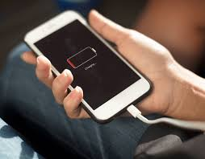
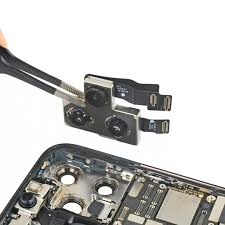
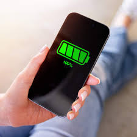

Seja Bem-vindo à TECCELL!
A melhor empresa para deixar seu celular como novo.
Alguns dos nossos serviços:
- Troca de tela (tela quebrada ou sem resposta)
- Reparo ou substituição da câmera
- Substituição de bateria
- Conserto de alto-falante e microfone
- Troca de conector de carregamento (porta USB‑C, Lightning, micro‑USB)
Para saber mais, clique aqui.
Nossos Serviços
"Seu celular em boas mãos: reparos rápidos, confiáveis e com garantia de quem entende do assunto!"
- Manutenção de proximidade, sensor de luz ou giroscópio
- Serviço de recuperação de dados e software (flashing)
- Reparo de botões físicos
- Troca de caixa, laterais ou tampa traseira
- Troca de conector de carregamento (porta USB‑C, Lightning, micro‑USB)
- Conserto de alto-falante e microfone
- Substituição de bateria
- Reparo ou substituição da câmera
- Troca de tela (tela quebrada ou sem resposta)
- Assistência de software
- Proteção e manutenção preventiva
"Seu celular em boas mãos: reparos rápidos, confiáveis e com garantia de quem entende do assunto!"
- Manutenção de proximidade, sensor de luz ou giroscópio
Sensores que afetam o funcionamento de funções como brilho automático, giroscópio para jogos, etc.
- Serviço de recuperação de dados e software (flashing)
Correção de sistema operacional, travamentos, recuperação de arquivos após danos lógicos
- Reparo de botões físicos
Botões de volume, power ou home/parâmetro com problemas de funcionamento.
- Troca de caixa, laterais ou tampa traseira
Restauração de aparência ou estrutura: partes esteticamente danificadas ou quebradas.
- Troca de conector de carregamento (porta USB‑C, Lightning, micro‑USB)
Problemas ao carregar ou conexão instável com o cabo.
- Conserto de alto-falante e microfone
Ruído ruim, falha no áudio ou microfone que não funciona durante ligações.
- Substituição de bateria
Quando a bateria não carrega, dura pouco ou incha.
- Reparo ou substituição da câmera
Problemas com foco, manchas, câmera traseira ou frontal com defeito
- Troca de tela (tela quebrada ou sem resposta)
Substituição de display (LCD e/ou touchscreen) — pode ser parcial (touchscreen) ou completa
- Reparo de botões físico
Botões de volume, power ou home/parâmetro com problemas de funcionamento
- Assistência de software
Correção de bugs, remoção de vírus, atualizações, recuperação de dados, reinstalação de sistemas operacionais e ajustes para máxima performance
- Proteção e manutenção preventiva
Aplicação de películas protetoras, capas, limpeza de placas e manutenção preventiva para prolongar a vida útil do aparelho.






Eventos de 2025
Com o passar dos anos, a Teccell expandiu suas operações, estabelecendo parcerias estratégicas com operadoras e fornecedores renomados. Essa expansão permitiu à empresa oferecer uma gama mais ampla de serviços e produtos, consolidando-se como referência no setor de assistência técnica de celulares.
Lista de Patrocinadores para os nossos eventos
- Vivo: Parceira da Teccell desde 2002, oferecendo soluções em telefonia móvel, fixa e TI empresarial, com foco em pequenas, médias e grandes empresas.
- Customic: Fornecedor de acessórios para celulares com mais de 10 anos de experiência, oferecendo produtos com alta tecnologia e certificação militar.
- Conserta Smart: Maior rede de assistência técnica da América Latina, com mais de 750 lojas, oferecendo serviços de alta qualidade.
- Skytech Solutions: Realizadora do Tech Channel, maior evento especializado em assistência técnica de celular e eletrônicos da América Latina, oferecendo capacitação e soluções para profissionais do setor.
- Skymachine: Parceira da Skytech Solutions, atuando no apoio e desenvolvimento de soluções para o setor de assistência técnica.
Nossos eventos
- Tech Channel: Maior evento especializado em assistência técnica de celular e eletrônicos da América Latina, realizado anualmente em São Paulo, reunindo profissionais e empresas do setor para palestras, workshops e networking.
- FLISoL: Festival Latino-Americano de Instalação de Software Livre, evento internacional realizado anualmente em diversas cidades da América Latina, promovendo o uso de software livre, com instalações gratuitas e palestras sobre o tema.
- ConFLOSS: Conferência De Free/Libre e Open Source Software, evento que visa unir a comunidade de software livre brasileira, destinado a profissionais da área de TI, usuários e entusiastas do software livre.
- Fórum de Tecnologia em Software Livre (FTSL): Evento anual realizado em Curitiba, Paraná, focado na disseminação de tecnologias baseadas em software livre, oferecendo palestras, painéis e oficinas para profissionais e entusiastas da área.
Portfólio da Empresa
A Teccell é especializada em atendimento rápido, confiável e profissional para smartphones de todas as marcas. Desde sua fundação em 4 de dezembro de 2014, na cidade de Frutal, Minas Gerais, a empresa tem se dedicado a oferecer serviços especializados de reparação e manutenção de equipamentos de comunicação, com foco em celulares e smartphones.
Missão e Valores
A missão da Teccell é proporcionar soluções rápidas e eficientes para os problemas dos dispositivos móveis, utilizando peças de alta qualidade e técnicas avançadas. A empresa preza pela transparência, comprometimento e excelência no atendimento, buscando sempre a satisfação total de seus clientes.
Diferenciais
- Técnicos certificados: Mão de obra especializada e segura.
- Peças com garantia: Garantia que protege contra defeitos nas reposições.
- Atendimento personalizado: Esforço em entender e solucionar as necessidades de cada cliente.
- Transparência no orçamento: Você recebe um valor fechado antes do conserto.
Como Funciona
- Traga seu aparelho na loja ou entre em contato conosco.
- Realizamos o diagnóstico gratuito e apresentamos um orçamento detalhado
- Após sua aprovação, iniciamos o conserto imediatamente.
- Você retorna no prazo combinado para buscar seu celular pronto, testado e com garantia.
Nossos Clientes
Aqui está Alguns dos nossos eficientes serviços
Antes
Depois

Antes
Depois

Entre em Contato
- Telefone: (31) 934455667
- WhatsApp: +55 (31) 998788790
- E-mail: teccell.assistencia.com.br
- Instagram: @TecCell.ufc
- Facebook: @TecCell.
Para saber sobre nossa lista de eventos para 2025 Clique Aqui